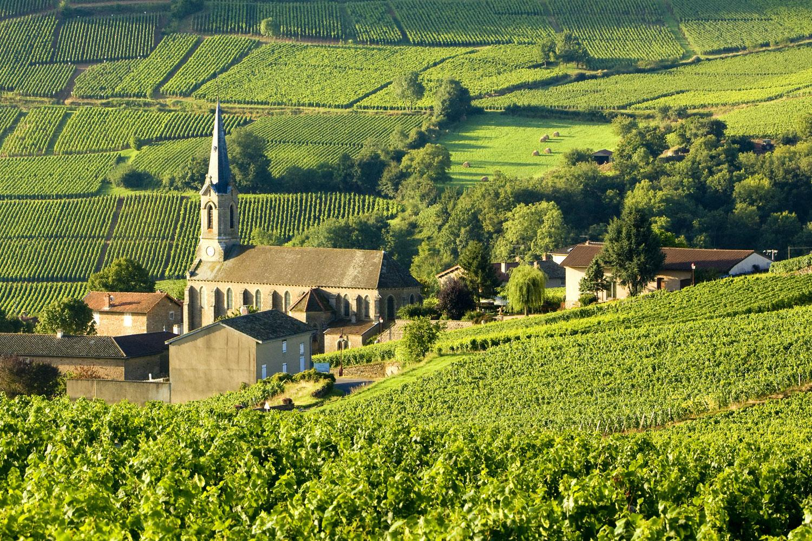

嘉索酒庄
乐特酒庄
法国著名产区勃良第嘉索酒庄Domaine GACHOT MONOT是一家历经五代人传承的家族酒庄。酒庄位于科高龙Corgoloin。科高龙是一个地处夜丘的小村庄，位于勃良第的中心地带，坐落在夜圣乔治和伯恩之间。酒庄共拥有12公顷的葡萄田，分别位于勃良第的三个地区：科高龙，Comblancien和夜圣乔治。酿造车间和橡木桶酒客都位于科高龙。
在这里共有6公顷的田地，其中有4公顷属于村级葡萄园。0.6公顷村庄级和一级园葡萄田则位于圣乔治产区。因此，每款葡萄酒年产量极有限。葡萄园的种植严格地遵循遵循天然的理念，种植密度为每公顷10000株。全部采用手工采摘，共持续8到10天。发酵过程中，采用百分之百除梗发酵，遵循传统发酵方式。
一般发酵期持续10到15天。之后葡萄酒在橡木桶中发酵约16-18个月，其中有20％到30％的桶为新橡木桶，18个月后即进行装瓶。其中红葡萄酒既不过滤，也不经过下胶澄清。以保持葡萄酒天然的状态。嘉索酒庄绝对是正宗勃良第葡萄酒的优秀生产者之一。
